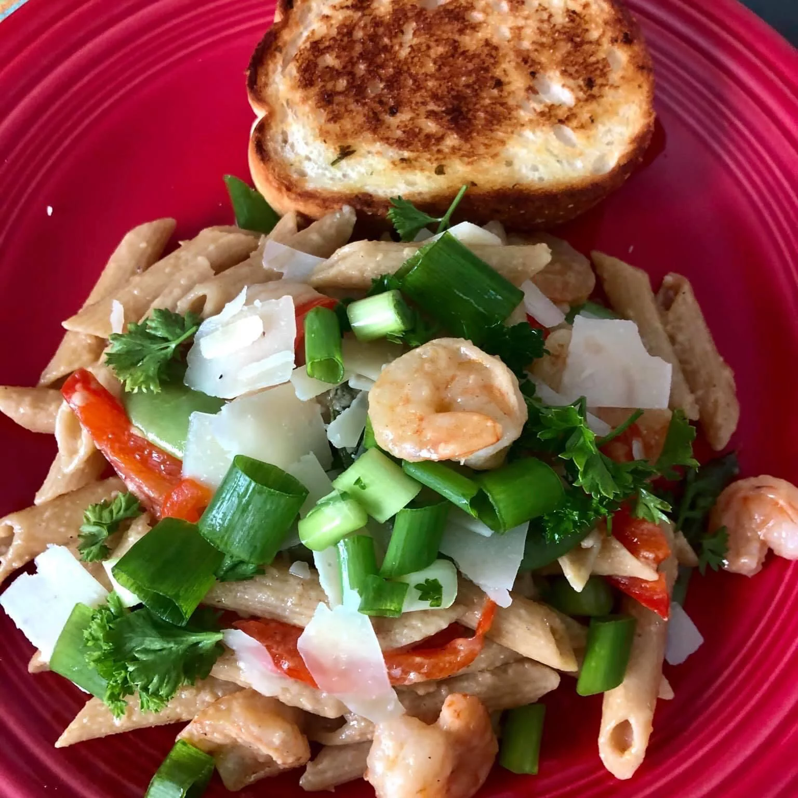

This lemon-shrimp pasta is quick, lemony, and a very merry light dish!

Description
This lemon-shrimp pasta is quick, lemony, and a very merry light dish!
Ingredients
- 6 ounces penne pasta
- 2 tablespoons butter
- 1 cup red bell pepper strips
- 1 teaspoon minced fresh garlic
- ½ pound uncooked medium shrimp, peeled and deveined
- 3 tablespoons lemon juice
- ½ teaspoon lemon zest, or more to taste
- 2 tablespoons Parmesan cheese, or to taste (Optional)
- 1 tablespoon chopped fresh parsley, or to taste (Optional)
Steps
- Bring a large pot of lightly salted water to a boil. Add penne and cook, stirring occasionally, until tender yet firm to the bite, about 11 minutes. Drain and set aside.
- Meanwhile, melt butter in a 10-inch skillet over medium heat. Add red pepper strips and garlic; cook until peppers are tender and crisp, 2 to 3 minutes. Add shrimp and lemon juice; stir constantly until shrimp turn bright pink on the outside and the meat is opaque, 4 to 6 minutes. Add cooked pasta and lemon zest and toss lightly to coat. Serve sprinkled with Parmesan cheese and parsley.